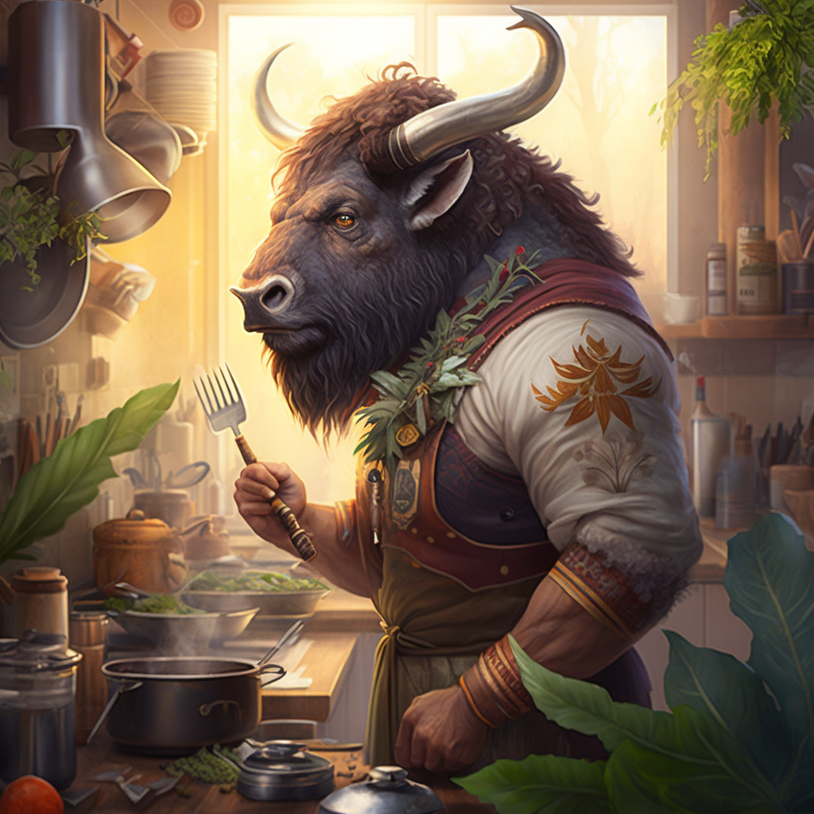

Nacido en el pintoresco pueblo de Pumanque, ubicado en la Sexta Región de Chile, Cocinando con Buffalo trae consigo la riqueza de sus raíces a la bulliciosa ciudad de Santiago. Su historia culinaria es tan diversa como los sabores que crea en su cocina.
Buffalo, un apasionado pumanquino, decidió embarcarse en su viaje culinario a la edad de 22 años cuando se trasladó a Santiago. Con determinación y un amor innato por la cocina, se convirtió en un Cocinero Autodidacta, aprendiendo las complejidades del arte culinario a través de la práctica y la experimentación.